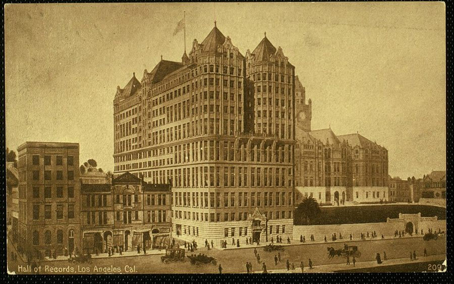
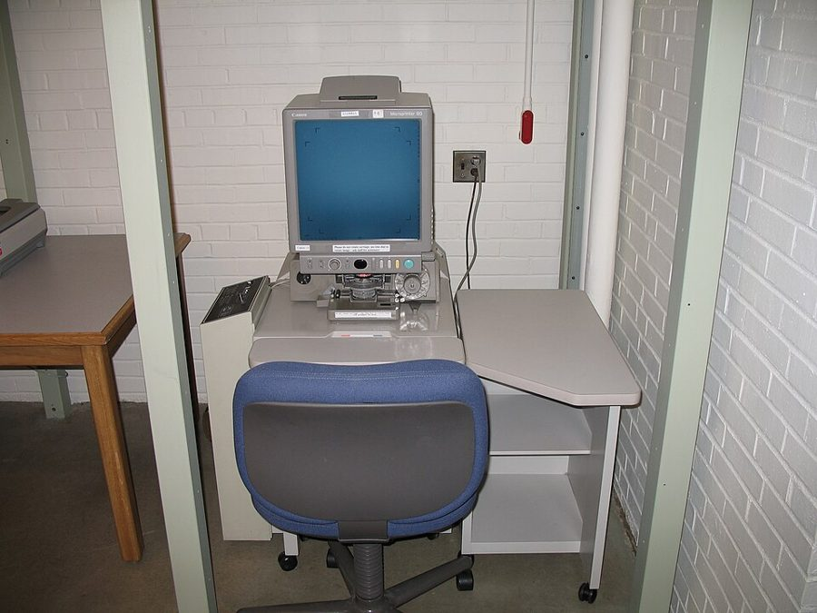
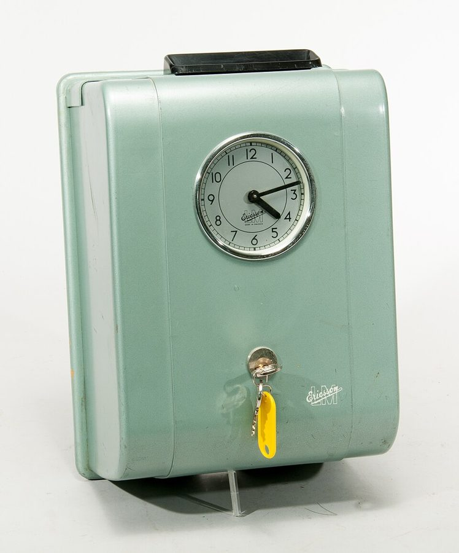
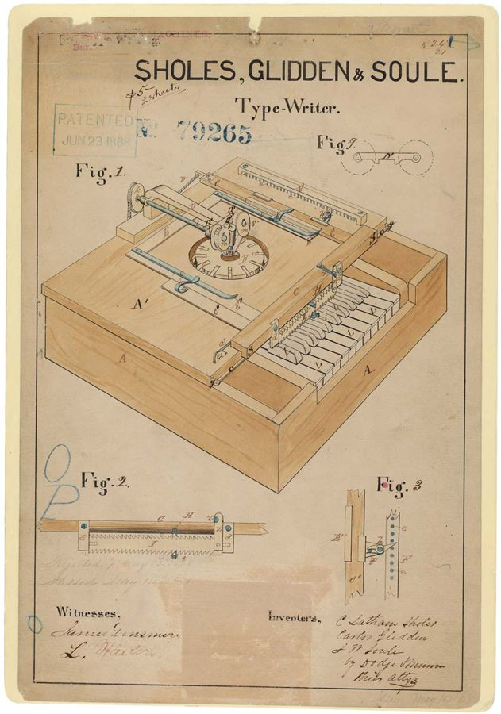

这一章在做什么
查旧账的一页。上一章 Dan 见了 Belle，只问到些零碎的线索；这一页是第二天，星期五，他一边上班一边追三件三十年前的事：Miles 是哪天死的，当年那些股票后来在谁名下，两份 1970 年的专利是谁申请的。
地点先是档案馆和报社，然后一直在 Hired Girl 的办公室。中间夹一场和上司的口角，对话快，俚语密。后半是两样文件：一封会计部门的公函，一叠专利图纸，股票和专利的行话都在这里，先看下面「行话」一节。
抓一样：Dan 每查一件事之前，心里已经认定了什么。

洛杉矶的 Hall of Records，约 1910 年的明信片。县里的出生、死亡、结婚、房产记录都存在这座楼里；海因莱因写这本书的时候它还在。场景 1 里 Dan 一早去的就是这个机关。
作者不详，公有领域，维基共享资源 人物
老人物只写到上一章结束时你知道的。
Dan Davis 叙述者「我」 醒来快五个月。在 Hired Girl 挂着 Research Engineer Emeritus 的头衔，实际是给销售部当活广告。昨晚去见了 Belle。
Belle 现在自称 Mrs. Schultz；没出场 三十年后又老又糊涂。上一章 Dan 说再也不见她。这一页她只来了电话和一张便条。
Miles 只提到 Belle 说他在 Dan 入睡后不到两年就死了，财产全留给了 Ricky。哪天死的、死在哪，她没说清。
Ricky 只提到 Miles 的继女 Frederica。Dan 入睡前把自己的 Hired Girl 股票寄给了她。Belle 说她后来跟 grandmother 走了。银行说从没替她管过信托。
McBee 总工程师，Dan 叫他 Mac 苏格兰口音，守旧，不认为 Dan 还算工程师。Dan 的编制挂在他的部门，但雇 Dan 的是总经理 Curtis。
Jack Galloway 销售经理；只提到 第 6 章里一见 Dan 就看出他是广告素材，拉着他和第一台 Hired Girl 合影。
Reuther新 chief accountant 公司的总会计师。Dan 托他查一件事，他用一封公函回复。
报社的资料员新 没有名字 《Times》资料室的人，一句带过。
场景地图
这一页是第 8 章的第 1–48 段，本站按场景分成 4 段。粗体是每个场景开头的几个词，照着它在书里找位置；读完一个场景回来打个勾。
THE NEXT MORNING was Friday, …约 300 词 上午没去上班，先后跑了两个地方查同一件事，回公司又托人查另一件。叙述，没有对话。 I went back to my cubbyhole …约 550 词 和总工 McBee 的口角，夹着对销售经理的牢骚。俚语最密，留意两人各拿什么压对方。 An hour or so later I …约 350 词 一封公函，和 Dan 读完后的推断。公函是会计腔，长句，一句一句拆。 I had written to the patent …约 850 词 先补叙三封信的来历，再拆大信封。留意他先看图还是先看字，最后翻到哪一栏。
背景：作者默认你知道的事
真实世界里的东西，按在书里出现的顺序排。专利在第 2 章的页面讲过一些，这里只补这一页用得上的。
场景 1 Hall of Records 和报上的 death notices美国没有全国统一的户籍。出生、死亡、结婚这些记录归县（county）管，存放的机关常叫 Hall of Records。加州有 58 个县，各存各的；州政府在 Sacramento，所以 Dan 会想到「也许州里汇总过」。
death notices 是家属在报纸上登的小启，一天一栏。查不到官方记录时，一天一天翻旧报纸是个笨办法，也是个办法。
场景 1 报社的资料室和微缩胶片
图书馆里的微缩胶片阅读机。胶片装在屏幕下面，摇到哪一页，哪一页就放大投在屏幕上。
History, Philosophy, and Newspaper Library, University of Illinois，CC BY 2.0，维基共享资源（与本书无关） 大报社都有自己的资料室（library），存着历年的报纸。从 1930 年代起，旧报纸被拍成微缩胶片（microfilm）。
查的人坐在阅读机前，仰着脸盯屏幕，一格一格往下摇，摇半天脖子就僵了。书里给这台机器换了个新名字，见下一节。
场景 2 广告公司和「account」1950 年代是美国广告业的黄金时期。大公司不自己做广告，包给广告公司（advertising agency）；在广告公司嘴里，一个客户就是一个 account 。
公司这边由销售或市场部门的人和广告公司对接。在工程师看来，这些人不造东西，只琢磨说法。
场景 2 打卡钟（time clock）
1950 年代的打卡钟，瑞典 LM Ericsson 造。上班、下班时把自己的卡片插进顶上的槽，机器在卡上打出时刻。
照片：Peter Häll，CC BY-SA 4.0，维基共享资源 工厂里按小时计薪的工人要打卡，工资照卡上的钟点算。拿月薪的职员、工程师、经理一般不打。
所以让谁去打卡，说的不只是考勤，还有这个人在公司里算哪一等。
场景 4 邮政汇票（postal order）向政府机关邮购文件要先付费。机关不收私人支票，因为支票可能兑不出钱；要的是在邮局柜台用现金换的一张汇票，美国通常叫 money order 。
Dan 那句括号里的话，学的是这类机关回信里的口气。
场景 4 IBM 的电动打字机IBM 在做计算机之前是办公机器公司，1930 年代就卖电动打字机，到 1950 年代是美国办公室的标准配置，手里攥着一大批相关专利。
第 3 章的页面讲过电动打字机为什么适合拆了当键盘用：每个键按下去只是接通一个电路。
场景 4 “Time on My Hands”1930 年的流行歌，Vincent Youmans 作曲，1950 年代的读者都听过。歌名是一句习语：have time on one’s hands ，手头有大把用不完的时间。
whistle … off key 是口哨吹跑了调。
书里的世界
这一页的新设定不多，多数是旧东西换了名字。先看 Dan 醒来以后走到了哪一天，再看表。
2000
2001
12 月 13 日
醒来
12 月 15 日
压废车的活
3 月 5 日
进 Hired Girl
5 月 3 日
Belle 来电，当晚见面
5 月 4 日，星期五
这一页
本站示意图。只画到这一页开场。真实的日历上，2001-05-04 也是星期五：作者 1956 年想必查过万年历。
书里的说法 在书里是什么 真实世界里 microscanner 报社资料室里查旧报纸的机器。没解释，只说看得人脖子僵。 就是微缩胶片阅读机，1930 年代已经有了。作者给它起了个更像未来的名字。 an Office Boy 自己滚进办公室、往文件筐里放信的机器。首字母大写，是个型号名，和 Hired Girl、Eager Beaver 是一路。 office boy 本来是办公室里跑腿的小伙计。沿固定路线送信的自动小车后来真有公司卖过，没有普及。 drafting machine / Drafting Dan 第 6 章见过：Aladdin 公司的制图机，像打字机一样敲键画线。Dan 的小隔间里有一台，在公司里算贵重设备。 计算机辅助设计（CAD）。1963 年的 Sketchpad 第一次让人在屏幕上画工程图，1980 年代才进了普通设计室。 Thorsen tubes 第 2 章的设定：能记住一整套动作的「记忆管」，Flexible Frank 和后来的 Eager Beaver 都靠它。 虚构。 the National Archives in Carlsbad Caverns 过期专利的全部档案存在那里。第 1 章说过，冷眠合同也在那儿存一份。 真实的美国国家档案馆在华盛顿。洞窟是国家公园，没存过档案。 专利号 4,307,909 和 4,307,910 1970 年批下来的两份专利，号码相连。 号码编得太快了，见下图。 our reorganization（1980） 公司在 1980 年重组过一次，老股票作废，换成新股。第 6 章 Chuck 提过大约二十年前那次合并。 — Cosmopolitan Insurance Group、Sierra Acceptances Corporation 公函里出现的两家公司，只有名字。 虚构。acceptance corporation 这类公司是真有的，见下面的行话表。
270 万
350 万
430 万
1956
1970
1981 年底
写书这一年
现实：约 349 万号
书里：4,307,909
现实到这个号
横轴：年份 纵轴：美国专利的流水号
本站示意图。美国专利从 1836 年起按批准的先后编流水号。作者把 1970 年的号码估到了 430 万，现实里这个号是 1981 年底才发出去的。
这一章的行话，先用中文过一遍
场景 3 的公函讲的是一批股票三十年里的下落，场景 4 讲的是专利文件。两样都只讲概念。
一千股里的哪几股：block、dividend、reorganization
Hired Girl, Inc. 最初发行的全部股票
小块
大块
Miles 和 Belle 的 49%
Dan 起初的 51%，编号排在最前面
订婚时过户
给了 Belle
剩下的一直在 Dan 手里，
1970 年 12 月 3 日寄给 Ricky
小块有多少股书里没说，图上的比例是随手画的。
本站示意图。这是 Dan 入睡那天你已经知道的状态。公函里的 the larger block、the smaller block 说的就是左边这两块。
股票是一股一股编了号的。a block of stock 是「一整批」股票。公司赚了钱按季度分红（dividends ），钱发给登记在册的持有人，所以翻分红记录就能看出某一批股票哪年在谁名下。
公司重组（reorganization ）时，旧股票收回作废（retired ），按比例换成新公司的股票（equivalent shares ）。旧股票没了，账上的来龙去脉还在。
over the counter
不在交易所挂牌、由券商一笔一笔谈价的买卖，叫场外交易。字面是「隔着柜台」。一大批股票拆开、零零碎碎地这样卖掉（piecemeal ），之后每一股去了谁手里就很难查了。
一份专利里有什么

1868 年 Sholes 等三人的打字机专利图，美国专利第 79,265 号。号码、批准日期、发明人的名字都在图纸上。这一张现存美国国家档案馆。
美国国家档案馆，公有领域，维基共享资源
每一页的页眉：专利号 · 日期 · 发明人（inventor）· 名称
drawings
附图
description
说明书
claims
权利要求
每个零件、每处连接
都画出来，标上号
怎么造、怎么用，
必须如实写
一条一条列出：
哪些归我独占
申请时写得尽量宽
审查员往回削
批下来的范围
本站示意图。下面一行说的是 claims 的来历。
专利文件有三部分。附图和说明书是给同行看的，等于公开的设计文档。claims 是给法院看的：它划出一个圈，圈里的东西别人不许做。
申请人总想把圈画大，专利局的审查员（patent examiner ）拿已有的技术一条一条往回削，替申请人跟审查员讨价还价的就是专利律师（patent attorney ）。
一个产品最早、最根本的那份专利叫 basic patent ，后来的改进专利都建在它上面。那时美国专利的保护期是批准后 17 年，过期（expired ）之后谁都可以用，档案照样留着。
英文 中文 一句话 stock issue 一次发行的股票 issue 是「发行的那一批」。retired issue 是已经收回作废的一批。 block (of stock) 一批股票 数量大、当作一个整体处理的股份。 dividend 股息，分红 公司按股数发给股东的利润。 first quarter 1971 1971 年第一季度 一年四个 quarter，分红通常一季一次。 a trust held in favor of … 以某人为受益人的信托 财产由受托人代管，好处归 in favor of 后面那个人。 party 当事人，一方 法律文书里指人或机构，不是聚会。 abstract 摘录，摘要 这里指从旧账里摘出来的股权变动记录。 assign 转让 把一项权利正式转到别人名下（第 2 章讲过）。 acceptance corporation 票据融资公司 买进别人的应收账款、做分期付款贷款的金融公司。 fraudulent 欺诈的，伪造的 fraud 的形容词。 overhead 间接费用 不直接产出产品的开销：管理、行政、房租。程序员说的 overhead 是从这里借的。 schedule of fees 收费表 schedule 这里是「一览表」，不是日程。 application for patent 专利申请 交给专利局的那一整套文件。 prints 复制件 文件、图纸的影印本。
词与短语
词条按在书里出现的顺序排，按场景分组。斜体小字是它所在的那句话里的几个词，方便你在书里找到。
场景 1 THE NEXT MORNING was Friday, …
get a crick in one’s neck
… got a crick in my neck …
脖子僵了，扭着了
crick 是脖子、后背突然的僵痛。
tucked in the freezer
… had been tucked in the freezer, …
被塞进冰柜（指进了冷眠）
tuck in 本是给孩子掖好被子。Dan 说起冷眠一向不用正经词。
They’ve never managed to regulate that
… They’ve never managed to regulate that. …
这件事上头还没管起来
冷笑话：人死在哪个县，还没有规定。They 指官府。
the desk
… and told the desk not to …
总机，前台
指接电话、收留言的那个岗位，不是桌子。
a retired stock issue
… of a retired stock issue. He …
一批已经注销的股票
retire 是「收回作废」，issue 是「发行的那一批」。两个都是熟词生义。
it took no feat of memory
… It took no feat of memory; …
这用不着什么过人的记性
feat 是了不起的本事。
come off the front end
… had come off the front end. …
是从编号最靠前的那头切下来的
把一串连号的股票看成一根料，从头上截一段。
场景 2 I went back to my cubbyhole …
cubbyhole
… back to my cubbyhole and found …
鸽子笼似的小隔间
for Pete’s sake
… “Oh, for Pete’s sake! If Galloway …
真是的！拜托！
for God’s sake 的委婉说法，Pete 原指圣彼得，和猫无关。不过这话从 Dan 嘴里出来，读者难免想到那只猫。
peddle the merchandise on its merits
… peddling the merchandise on its merits …
老老实实凭货色卖货
peddle 是沿街叫卖，带贬义。on its merits：凭东西本身的好处。
cute new angles
… to think up cute new angles, …
耍小聪明的新噱头
angle 是推销、报道的「切入点」。cute 在这里是耍小聪明，不是可爱。第 6 章 Galloway 自己说过 sales angle。
kibitz
… that he concentrated on kibitzing the …
在旁边指手画脚
意第绪语来的词，原指看人打牌的在一旁支招。
handle our account
… agency that handled our account. But …
承办我们公司的广告业务
account 见上面「背景」。
paper shuffling
… strikes me as paper shuffling, mere …
倒腾文件，瞎忙
shuffle 是洗牌。strike me as：在我看来像是。
drag one’s feet
… I had been dragging my feet. …
故意拖着不办
pix
… all the pix he wanted of …
照片
pictures 的俚语缩写，报刊和电影圈的行话。
what the fortuneteller told the cop
… what the fortuneteller told the cop. …
一句没写出来的回敬
算命的对警察说了什么，书里没写。美国口语里有这种套路：不直接说粗话，说「某某对某某讲的那句」，听的人自己去想。大意是叫他一边去。
fancification
… who deal in fancification to fool …
花里胡哨的包装
Dan 自造的词：fancy 加 -fication。deal in 是「以……为业」。
be charged to
… You are charged to my department, …
（你的工资）记在我部门的账上
charge 是记账。不是指控，也不是充电。
see to it
… working hours. Please see to it.” …
请照办
上级交代下级的口气。
binary notation
… to ten slowly, using binary notation. …
二进制记数
这句的玩笑见读后部分。
bolt bin
… chief engineer of this bolt bin …
这个破厂子
字面是装螺栓的零件箱。工程师对自己厂子的叫法，一半嫌弃一半亲热。
before you started to shave
… bin before you started to shave. …
那时候你胡子还没长出来
论资历压人的老话。
knuckle under
… going to knuckle under to a …
低头服软
draw your check
… you won’t draw your check.” …
领不到薪水
draw 是领取，check 是工资支票。
tied up
… that expensive machine tied up any …
被占着，别人用不上
前面的 I don’t fancy 是英国人的说法：我可不乐意。
fume
… staff coffee bar and fumed. Like …
生闷气
名词是烟气。
triple-ought-gauge minds
… lot of other triple-ought-gauge minds, Mac …
心眼窄到极点的人
ought 是「零」的老说法，triple-ought 就是 000 号。意思从上下文看得出：心眼小得可怜。具体借的是哪一行的规格号，书里没说；一种猜测是模型火车的轨距：O、OO 一个比一个窄，照这样排下去的 OOO 更窄。
by the numbers
… could be done by the numbers. …
按口令一步一步来
军队操练用语：教官喊一个数，做一个动作。引申为照章办事、不动脑子。
场景 3 An hour or so later I …
throw the switch on
… to throw the switch on me …
对我下手，把我「断电」
字面是扳下闸刀。
Re:
… Re: the stock you inquired about. …
事由：
公函开头的套语，来自拉丁语 in re（关于）。邮件标题里的 Re: 就是它。
the abstract at hand
… the abstract at hand is somewhat …
手头这份摘录
at hand：在手边。obscure：含糊不清。
a party named
… favor of a party named Heinicke. …
一位名叫……的当事人
piecemeal
… sold it piecemeal “over the counter.” …
一点一点地，零碎地
over the counter 见行话。
call on
… feel free to call on us. …
来找（我们帮忙）
不是打电话。call on someone：求助于、拜访。
Ch. Acct.
… Y. E. Reuther, Ch. Acct. …
Chief Accountant，总会计师
whiff of
… the deal whiffed of Belle; this …
有一股……的味道
whiff 是一丝气味。通常说 smell of、reek of。
stooge
… another of her stooges or possibly …
替人出面的同伙，傀儡
原指喜剧里给主角当靶子的配角。
give a lead to
… that might give a lead to …
提供一条找到……的线索
lead 是线索，侦探的用词。
场景 4 I had written to the patent …
take out a patent
… both patents had been taken out …
申请并取得专利
bulwark
… The theory was bulwarked by the …
得到……的支撑
bulwark 是堡垒、防波堤，当动词用不多见。
a thing or four
… teach me a thing or four. …
好几手
习语是 teach someone a thing or two（教他几招）。Dan 把 two 换成 four。
the whole works
… prints of the whole works on …
全套东西
the works：所有的一切。
the basic
… was 4,307,909, the basic for Eager …
基础专利
形容词当名词用，省了 patent。
chew you down
… the patent examiners chew you down—this …
一口一口把你啃小
仿 beat down（压价）、whittle down（削减）造的。
this is why patent attorneys are born
… this is why patent attorneys are born. …
专利律师就是为这个才生到世上的
挖苦。
get around to
… I finally got around to looking …
终于腾出手来做
spate of drivel
… in that spate of drivel she …
那一大通胡话
spate 是一阵急流，drivel 是口水、胡言乱语。
smooth up
… other engineer to smooth up, then …
打磨完善
Dan 常说 smooth the bugs out。
go through
… deal had never gone through; that …
（交易）办成
sour the deal
… had soured the Mannix deal. …
把那笔交易搅黄了
ferret out
… be able to ferret out where …
搜查出来
ferret 是雪貂，放进洞里赶兔子用的。
gain a dime
… had gained a dime out of …
捞到一个钢镚儿
dime 是一角硬币。
this boy really had it
… myself; this boy really had it. …
这小子真有两下子
have it：有那份天分。
economy
… admired the economy of the linkages …
精简，不浪费
不是经济。设计上用最少的零件把事办成。
vermiform appendix
… like the vermiform appendix; a source …
阑尾
vermiform：蚯蚓状的。
give credit
… chassis, giving credit on the drawing …
注明出处
chassis 是底座、机架。
down the street
… you can buy down the street. …
街上就买得到
值得停下来的句子
I counted to ten slowly, using binary notation.
— 场景 2，McBee 叫他打卡之后。本站译：我慢慢数到十，用的是二进制。
美国人教孩子的规矩：发火之前先数到十。Dan 照做了，但换了进制：1、10、11、100，一直数到 1010。数的还是十个数，可每个数念出来都更长，所以是 slowly 。
一个工程师压火的办法。压住之后他开口的第一个词是 Mac ，不是 Mr. McBee。
… claim the whole wide world in the broadest possible terms, then let the patent examiners chew you down …
— 场景 4，Dan 讲 claims 该怎么写。本站译：用最宽的措辞把整个世界都圈进来，再让专利审查员一口一口把你啃小。
两个动词并列：claim 和 let 。动词 claim（声称归我）和名词 claims（权利要求）是同一个词，他在拿这个词本身开玩笑。terms 是措辞，不是条款。
接着他说 claims 只在法庭上要紧。这不是说它没用，是说它帮不了他眼下想弄清的事：这台机器到底是怎么设计的。所以他先翻图。
That was smart, that was engineering: never reinvent something that you can buy down the street.
— 场景 4，看第二份专利的图。本站译：这才叫聪明，这才叫工程：街上买得到的东西，绝不自己再发明一遍。
冒号后面是一句祈使句，当格言用。程序员的版本是「不要重新发明轮子」。
回到第 3 章：开车去 Miles 家的路上，Dan 给自己那台还没动手的制图机想的正是这一手，买一台电动打字机，拆了当键盘。他在夸别人，夸的是自己想过的主意。再往下一段，这一页就结束了。
检查一下理解
先在心里答，再点开。答错的那题，回书里把对应的场景再读一遍。
1.（场景 1）Dan 查到 Miles 是哪天死的了吗？
没有。档案馆在搬家，叫他下个月再来；他改去报社翻旧报纸的讣告，只得到一个否定的结果：在他入睡后第 12 到第 36 个月之间，Miles 没有死在洛杉矶县，前提是讣告没漏登。人可以死在任何地方，所以这等于没查到。
2.（场景 1）三十年前的股票编号，Dan 凭什么张口就报得出来？
公司最初一共只发了一千股，他拿的是 1 到 510 号。给 Belle 的订婚礼物是从最前面的号码切出去的。所以两批股票的号码范围他不用背。
3.（场景 2）Galloway 这回想让 Dan 干什么？Dan 为什么拖着？
让他穿上 1900 年的衣服拍广告照。Dan 说要拍就穿 1970 年的：1900 年比他父亲出生还早十二年，这是造假。Galloway 说没人看得出来。Dan 回了一句粗话，并且认定搞包装的人把大众当文盲。
4.（场景 2）McBee 和 Dan 各自手里有什么牌？谁赢了？
McBee 的牌：Dan 的工资记在他部门，不打卡就不发薪；还可以把他调去广告部，收回那台制图机。Dan 的牌：雇他的不是 McBee，McBee 开除不了他；McBee 自己也不打卡。没有分出输赢，McBee 撂下话走了，Dan 去咖啡吧生闷气，心里已经不打算久留。
5.（场景 3）公函里的 larger block 和 smaller block 各是哪一批股票？各自去了哪？
大的一批是 Dan 寄给 Ricky 的那张：分红从 1971 年发到 1980 年，收款的是一个以 Heinicke 为受益人的信托，重组后换成的新股卖给了一家保险集团。小的一批是给 Belle 的订婚礼物：她拿到 1972 年，转给一家金融公司，被拆散零卖了。
6.（场景 3）读完公函，Dan 对那个叫 Heinicke 的名字是怎么判断的？
他不认识这个名字。他的推断是：自己写的那份转让根本没生效，账上这笔过户是伪造的，手法像 Belle；Heinicke 要么是她的同伙，要么是个编出来的人。这是他的推断，公函本身没有这么说。
7.（场景 4）Dan 为什么认定 Eager Beaver 的头一份专利就是 Flexible Frank？又怎么解释上面是他自己的名字？
图上的机器比 Frank 强，连杆更简单，但原理只能是他那一套，像 Frank 的第二代。发明人一栏是他的名字，他的解释是：样机没有被偷，是交给别的工程师改好，再用他的名义申请的。也就是说 Belle 昨晚又撒了谎。
8.（场景 4）这个解释有一处对不上，Dan 自己也看出来了。是哪一处？
Mannix 那笔交易确实没成，这一点公司的记录可以作证；而 Belle 说没成的原因正是 Frank 交不出来。如果 Frank 一直在他们手里，交易为什么黄了？Dan 猜了一句「也许是 Miles 自己吞了」，然后放弃了，说反正专利已经过期，他只在乎证明自己是原创者。
9.（场景 4）同一句 It was D. B. Davis 出现了两次。第二次为什么比第一次严重？
第一份专利对应的机器他真的造过，名字是他的还说得通。第二份是制图机，他只在入睡前那个晚上开着车想过一遍，从没画过图，按他自己的话，它只存在于他的脑子里（第 3 章、第 6 章）。这一页到此为止，没有给解释。
留给后面的问题
这一页自己提出来、没有回答的。
一台只在 Dan 脑子里存在过的机器，专利上的发明人怎么会是 D. B. Davis？
如果 Frank 一直在 Miles 和 Belle 手里，Mannix 的交易为什么没成？如果不在，Aladdin 的专利又是从哪来的？
公函里那个叫 Heinicke 的人是谁？